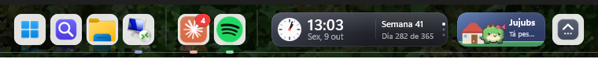
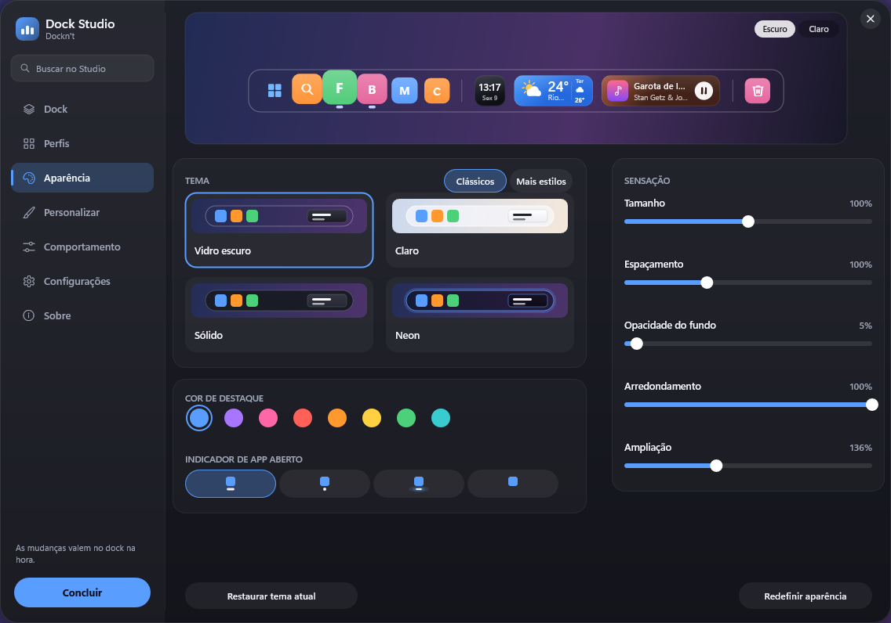
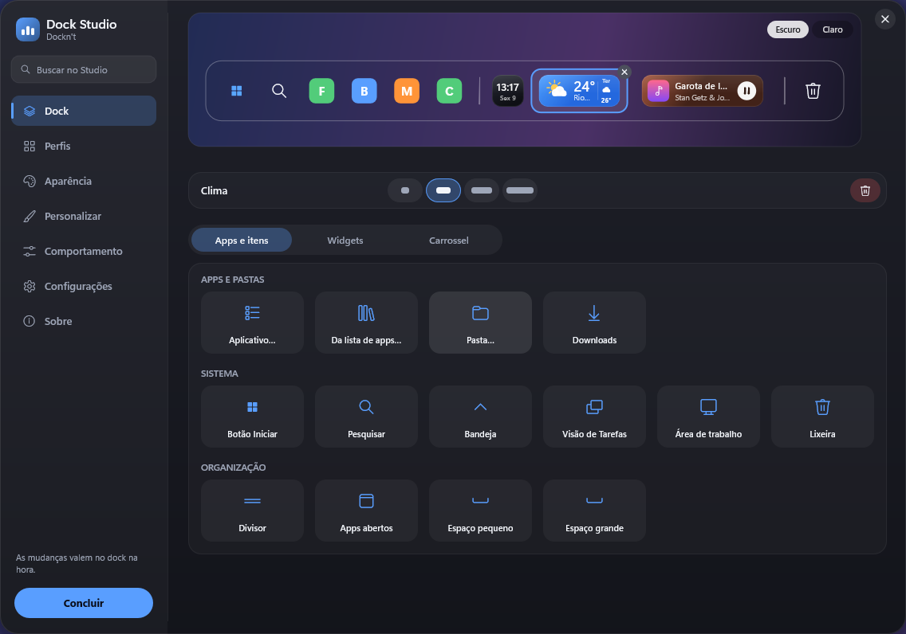
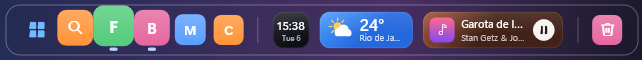
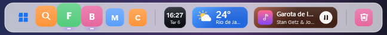

Seus apps
Fixe, reordene e solte arquivos nos ícones. Os apps abertos aparecem depois de um divisor, com prévia das janelas.
É uma barra nativa para o Windows 11, feita em Rust, com seus apps e widgets que mostram o que está acontecendo. Os dados ficam no seu computador. O nome é ironia.

“A gente não chama de dock. A gente chama de… uma barra. Com seus apps. Que fica embaixo. [pausa] É uma dock.”
Os apps de sempre de um lado, os widgets do outro, e tudo se atualiza só quando muda.
Fixe, reordene e solte arquivos nos ícones. Os apps abertos aparecem depois de um divisor, com prévia das janelas.
Relógio, agenda, música, Pomodoro, bateria e mais 30. Clique em um e ele abre um painel.

Tamanho, temas, cores e comportamento, ajustados no Dock Studio com prévia ao vivo.
Um quadrado quando é só um número. Uma faixa larga quando tem mais coisa pra dizer. A maioria tem de uma a quatro larguras.
Escolha um widget e uma largura
— Dá pra deixar maior?
— Foi o que ela disse.
“Coloquei o widget de água no computador do escritório inteiro. Ninguém passou a beber mais água. Mas agora todo mundo sabe que não bebeu.”
As mudanças valem na hora, e a prévia no topo mostra a dock como ela vai ficar.



Convive com a barra de tarefas ou toma o lugar dela. Não injeta nada no Explorer e não pede administrador.
“Minha única função é devolver a barra de tarefas se o Dockn't fechar. Ele nunca fechou. [pausa] Eu continuo vindo trabalhar.”
“Abri o Gerenciador de Tarefas pra ver quanto ele consome. Demorei pra achar. [pausa] Pela CPU, eu quero dizer.”
Sem conta, sem login, sem telemetria e sem anúncio. A internet só entra quando você liga:
Clima e notícias, se você ligar os widgets de internet. Vêm desligados.
O GitHub, pelo GitHub CLI que já está no seu PC.
O chat de IA, com a sua própria chave, guardada no Gerenciador de Credenciais do Windows.
O resto fica em %LOCALAPPDATA%\ArkhenetLabs\Docknt, num arquivo de configuração que você pode abrir.
“Me pediram uma apresentação sobre a política de dados. A política é: não tem dados. Foi a reunião mais curta da minha carreira.”
“Quando lança? Em breve. Eu sei a data. [olha para a câmera] Eu não sei a data.”